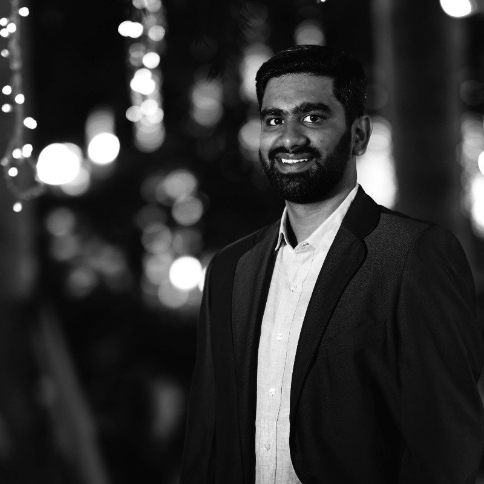

I build products that work in the real world.
Mechanical Engineer turned PM, with 8+ years across automotive, manufacturing, operations, and SaaS. Most recently at Smartstaff, I worked across roadmap, rollout, GTM, and enterprise adoption in a business where the hard part was never just shipping.
I am strongest where workflows are messy, teams are cross-functional, and adoption depends on getting the last mile right. Lately, I also build with AI - not as a buzzword, but as infrastructure for faster thinking, sharper product decisions, and faster shipping.
I am comfortable when there is no playbook yet. New product motion, unclear ownership, greenfield workflows - that is usually where the real leverage is.
I work well at the seams: product, ops, finance, design, engineering, and GTM. Not as a coordinator, but as someone willing to make tradeoffs visible and move the work forward.
I go looking for friction before users complain about it. Onboarding, activation, configuration, and handoff flows - the work that decides whether a product gets adopted or quietly bypassed.
I have spent much of my career in environments where software only matters if operations, customers, and internal teams can actually use it. That makes me biased toward rollout clarity, measurable adoption, and systems that hold up under scale.
What I am building now with AI
These are the products I am actively building right now. They matter because they show how I define the problem, where I use AI in the workflow, and what kind of product judgment I bring when I can move directly from problem to shipped system.
Browse more work →A family health record system where AI helps structure the past, not just read one document
Vitae helps families upload prescriptions and lab reports, review AI-structured outputs, store them as a long-term health record, and build context across older prescriptions over time. The product challenge is not just OCR accuracy. It is designing a trustworthy repository where extraction, review, storage, and later analysis all work together in a sensitive healthcare workflow.
A coordination layer for the part of trip planning nobody really owns
Andiamo is built around the insight that group trips usually fail before booking starts. The real issue is not itinerary planning - it is coordination, commitment, budget alignment, and decision-making across a group. The product uses deadlines, private budgets, and lightweight social pressure to move a group toward a decision.
A founder CRM built around the idea that remembering context matters more than filling a pipeline
Remi is a sales memory system for early-stage founders who do not behave like trained sales teams. It captures post-call context through lightweight inputs, uses AI to structure what mattered, and brings that context back when follow-up time comes. The core product thesis is simple: do not ask founders to become better at CRM admin, build a system that adapts to how they already work.
The path was not linear, which turned out to be useful
I did not enter product through a neat PM ladder. I moved through technical, commercial, operational, and customer-facing roles first. That is a big part of how I think now.
Application Engineer
Started in a techno-commercial role that mixed engineering, design, testing, pricing, and revenue thinking. That was the first time I realized I was more interested in the whole system than in staying inside one narrow function.
Pricing and Market Strategy
Worked on pricing in Cologne while studying business in Berlin. The combination sharpened how I think about market structure, commercial leverage, and how decisions on paper show up in actual customer behavior.
Cross-functional operator to Product Manager
Moved through customer success, operations, program management, and product. I revamped the UX, lifted feature adoption to 85%, and reduced enterprise go-live timelines by 30%. That sequence taught me where products fail after launch: rollout, handoff, incentives, and the parts nobody wants to own once the feature is technically done.
Building with AI and sharpening product craft
Right now I am investing heavily in better product thinking, structured execution, and practical AI use. The point is not to talk about AI as trend language, but to use it to reduce friction, improve leverage, and build more independently. That mix is what makes me care about products that survive real-world rollout, not just good demos.
The person behind the role still matters
I want the site to feel like meeting me, not scanning a resume. These are the threads that shape how I think and what I notice.
I learn fast when the problem is real
A recurring pattern in my career is stepping into unfamiliar domains and getting useful quickly. Automotive, staffing, SaaS, operations, pricing - the domain changes, but the work usually starts the same way: understand the incentives, find the friction, and stay curious longer than most people do.
I care about building teams, not just outputs
One of the things I am most proud of is building teams that could run with minimal intervention. Hiring well, assigning ownership clearly, and creating a strong feedback loop has mattered to me as much as any individual project outcome.
I am trying to build a life with more autonomy in it
Success for me is not just title or salary. It is reaching a point where money is not the sole driver of decisions, and where work creates enough freedom for deeper things: family, nature, learning, and a calmer way of living.
Open to thoughtful product conversations
If you are building something ambitious, fixing a messy product surface, or looking for a PM who is comfortable across product, ops, and execution, I would be glad to talk.